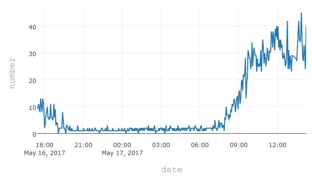
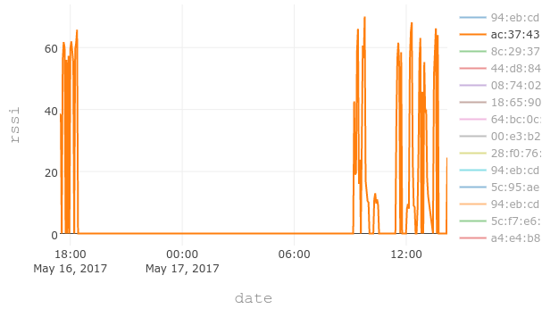

How Many People are Around
Conheça uma biblioteca para o Python de nome howmanypeoplearearound que numa tradução seria: Quantas pessoas Estão em Volta. Com esse código é possível sondar o número de aparelhos WiFi que estão buscando uma rede para se conectar.
Vi no Twitter uma chamada para uma postagem de como contabilizar a quantidade de pessoas próximas a você através de um pacote do Python. Resolvi ir atrás e entender o funcionamento da "brincadeira".
Tudo ocorre através do WiFi! Isso porque, dispositivos como celulares ficam a todo momento enviando sinais na busca de redes WiFi e é através dessa requisição que um desenvolvedor escreveu uma biblioteca para contabilizar quantas requisições estão sendo disparadas.
O mais interessante é que essa é uma forma de invadir a privacidade de pessoas anônimas e possui muito mais utilidade do que você possas supor num primeiro momento, até porque, o experimento não acabou nesta simples aplicação.
Essa tecnologia pode ser utilizada para contabilizar o número de pessoas em um show, numa manifestação ou num aglomerado de pessoas.
Também poderíamos mensurar a quantidade de pessoas que estão próximas a determinada loja.
No entanto, pensando, a melhor utilidade que achei que pudesse ser feita com uma ferramenta dessas é verificar se num determinado lugar, como por exemplo, em exames e provas, existe dispositivos móveis ligados e fazendo solicitações.
O gráfico em anexo mostra os colegas de trabalho chegando pela manhã :D
 É importante lembrar que para poder utilizar essa ferramenta você precisa de um tipo especifico de adaptador WiFi que pode ser adquirido, segundo o autor, por aproximadamente $10.
Para maiores informações, acesse o link no Github, faça um clone, utilize e deixe um comentário posteriormente contando a sua experiência!
DETERMINANDO A LOCALIZAÇÃO COMO DISPOSITIVOS Raspberry PI
Se não fosse o bastante, ainda é possível ir muito além! Pela rede WiFi também é possível e de várias formas, calcular com precisão o posicionamento geográfico do aparelho envia solicitações à rede WiFi.
O desenvolvedor explica como obtém o posicionamento que, de forma bastante resumida, podemos dizer que a localização é determinada através do posicionamento de alguns Raspberry PI contendo a aplicação find-lf que é, na verdade, um plugin, uma extensão do módulo FIND. Ambos projetos foram escritos em Python.
Veja na imagem abaixo o posicionamento em que os dispositivos estão dispostos.


FIND: THE FRAMEWORK FOR INTERNAL NAVIGATION AND DISCOVERY
O FIND é um acrônimo de Framework for Internal Navigation and Discovery e trata-se do framework principal e fornece suporte aos outros que acabamos de ver.
Segundo a documentação oficial, temos que o mesmo é uma biblioteca para possibilitar a Navegação Interna e a Descoberta (FIND). Através de uma simples antena WiFi é possível determinar o posicionamento de um Smartphone (Android) dentro de uma casa ou escritório bastando somente habilitar a rede WiFi (laptop ou Raspberry Pi ou etc.)
A documentação sugere o uso deste sistema ao invés da utilização de sensores de movimento. Isso porque, a sua resolução permitirá que o teu telefone distingua se estás na sala de estar, na cozinha ou no quarto, etc. A informação da posição poderá ser usada de várias maneiras, incluindo no uso de automação residencial.
O sistema foi construído através de dois componentes principais: um servidor e um dispositivo de impressão digital. O dispositivo de impressão digital ( programa de computador ou aplicativo Android ) envia os dados especificados para o servidor que utilizar Machine Learning para armazenar as impressões digitais e para analisa-las. Em seguida, o mesmo retorna o resultado do dispositivo e armazena o resultado no servidor para por exemplo, poder acessar via um navegador Web.
Por fim, é importante lembrar que todo o sistema faz uso de tecnologias abertas e o seu código fonte está disponível no Github.
O projeto além de possuir sua documentação no Github, também possui um site que contém basicamente as mesmas informações mas com uma apresentação mais comercial.
LINKS EXTERNOS
howmanypeoplearearound - Permite contabilizar as requisições na rede WiFi find-lf - Possibilita determinar a localização exata do aparelho através da rede WiFi
Tags python, wifi, monitorar, blog
Comentários
comments powered by Disqus